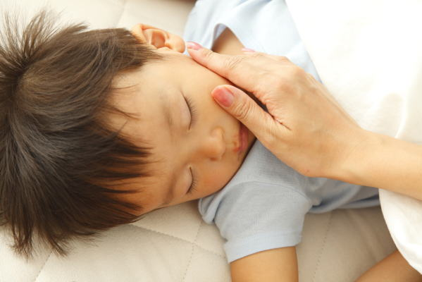
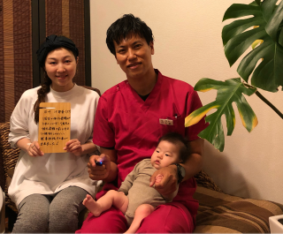
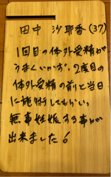

鍼灸、整骨、接骨、美容鍼灸、整体、カイロプラクティック、O脚矯正、不妊、でお困りの方はTeaching Beauty鍼灸マッサージ整骨院へ。
電話でのご予約・お問い合わせはTEL.03-6413-7803
〒154-0014 東京都世田谷区新町3-21-1さくらウェルガーデン301号室
不妊症施術 Infertility Treatment
鍼灸施術が不妊に効果がある4つの理由
1.【不妊症には冷えが大きく関係します】
不妊症に悩む20~30代の女性は手先、足先、お腹が冷えている方が多いです。
原因としては昔とは違って生活環境が大きく変わった事が原因だと思われます。
交通網の発達によって、あまり歩かなくても済むようになった。歩く量が少ないと下肢の静脈の流れが悪くなり、冷えの原因となります。
また、暖房器具の発達によって、下垂体機能調節である産熱機能が低下していることも原因です。
低体温（平熱が３５℃台）で体が冷えていると免疫や細胞が働きにくい状況になり、細胞活性が低下する。
その結果、卵巣、子宮、卵子、女性ホルモンなどの活性力も低くなってしまう。
そのために、不妊症体質になってしまうのです。
要するに、皆さんは冬に冷たい布団に入るのは嫌ではありませんか？
赤ちゃんも同じです。母親の子宮（ベッド）が冷たければ、赤ちゃんの居心地が悪いため子宮に受精卵が留まってくれません。
妊娠したいようなら、お腹と仙骨を温め、足先（膝下からつま先まで）をかなり温かくして過ごして下さい。
Teaching Beauty鍼灸マッサージ整骨院では、スカートを禁止としております。
冷えを助長するためだからです。
不妊症の患者様は腹巻、厚手の靴下は必須アイテムとなっております。
2.【不妊症は血行不良が原因】
不妊鍼灸をすることにより血液が滞っている部分を刺激し血液の流れを良くする。
また、凝り固まった筋肉を緩めることにより血行を改善する。
血液は身体にある60兆個の細胞1つ1つに栄養を届けてくれる。
東洋医学では血行が滞っている部分の事をオ血（おけつ）といいます。
オ血（おけつ）により栄養がうまく行き渡らないと各細胞が元気になれません。
子宮への血液の流れが悪ければ、当然、妊娠するための準備が整いません。
また、股関節の柔軟性が低下していると子宮への血液が滞るため不妊症になりやすい傾向が見受けられます。
受精するためには、子宮に血液を介して栄養を届ける必要があるのです。
そうして、子宮の内膜を厚くする必要があるのです。ベットに羽毛を1枚1枚敷いて赤ちゃんが寝やすいベットを作る感じをイメージして下さい。それが子宮の内膜を厚くするということなんです。そのためには血行を良くする必要があります。
3.【不妊症には自律神経が関係する】
ストレス社会、不規則な生活、睡眠時間が遅い、添加物の食べ物を多く摂っているなどの生活を繰り返していると次第に自律神経の調節がうまくできなくなります。
自律神経は、すぐには身体に症状が出てくるものではないので、自律神経が乱れている事になかなか気づきません。
そのため、不妊症方には日常生活のアドバイスをして改善して頂きながら、不妊鍼灸にて自律神経を調整する必要があります。
自律神経は内臓を調節している神経でもあるため、最終的には内臓に少しずつ障害を与えて、大病や癌の原因にもなります。
自律神経の調節は日々の中でリラックする時間を作ってあげて、体を労わりメンテナンスする時間とお考え下さい。
4.【不妊症の方は気の流れが悪い】
気と聞くと怪しいと思ってしまう方も多いと思います。
しかし、私たちは日常の中で「元気、やる気、気持ち、活気、景気がよい、気がつく、気が合わない、気が合う、短気、病気、天気、気候、人気、勇気など」様々な言葉で気という表現をしているのです。
お正月には1年の運気が上げるために初詣に行ったりしていませんか？
人間の体の中には西洋医学では説明できない気の流れというものが存在するのです。
気の流れが低下すると体の表面を保護するバリアが出なくなるために、運気が低下し不幸が降り注ぐようになるのです。
気の流れとは、人間の体の中には20本の電車の線路の様な経路が頭のてっぺんから足先まで流れています。
電車で例えると各駅がツボになります。東京駅のように様々な線路が集まるツボもあります。
また、人身事故になることもあるのです。桜新町駅で人身事故が起こると渋谷駅も人でごったがえします。その場合、まずは渋谷駅など桜新町以外の所で振り替え輸送をすることにより混雑が解消されます。
人間の体も同様にツボの経路上に問題があるのなら、問題があるお腹（子宮）辺りを刺激するのではなく、渋谷駅の様な離れたツボを調整する事により結果的に不妊症が改善されるのです。
つまり、体の不調（腰痛、肩こり、便秘、頭痛、だるさ、むくみなど様々な症状）があると妊娠するための免疫や気の流れが全力で子宮をサポートできなくなります。
例えば、何とか来院できるぎっくり腰の患者さんを足のツボ１つ刺激してすぐ動けるようになることが当院では多くあります。所要時間１分です。これは、経絡（気の流れ）の説明なくして西洋医学では説明できません。
腰が悪いけど、足先に鍼を刺しただけで全く動けるようになってします。これは経絡で腰と足が繋がっていることになるのです。子宮や不妊も同じことが言えます。全身の調節をすることによって、子宮の環境が良くなるのです。
そのため、不妊鍼灸はツボ流れが悪くなっているところを調整し妊娠できる気の流れ、免疫を調整するのです。
当院は不妊症治療で高い評価を得ている理由
Teaching Beauty鍼灸マッサージ整骨院では、『冷え、血行改善、自律神経調節、気の調節に加え健康指導、食事指導、基礎体温管理』などを総合的に実施していき妊娠しやすい環境を整えています。
患者様の質問やお困りは実際に来院時にお答えしたり、YOUTUBEやブログ内にて公表しております。youtubeで「TeachingBeauty鍼灸整骨院」と検索してみて下さい。
当院の実績としては、一年通われた方の73％の患者様が妊娠するかなり高い成績を収めております。40歳からでも妊娠は可能です。
鍼灸は痛いのではないか？妊娠したいけど鍼は...
と言う方にも安心して施術を受けて頂けるように刺さない鍼での不妊施術もご用意しております。
鍼がどうしても苦手な方は、刺さない鍼でも十分妊娠可能です。
刺さない鍼とは、ツボ押し器のような専用の器具を用いて施術をしていきます。施術方法はツボ押し器で押されている感じだけで大変気持ちの良いものです。
【患者様の喜びの声】
1、不妊症（体外受精併用） 50歳 M.O様 第1子
私は35歳で結婚して夫婦生活を2年間行っても子供を授かる事が出来ませんでした。 そのため、37歳で不妊治療の病院に通いだしました。 最初はタイミング療法、人工受精、体外受精と色々行っても全く妊娠できません。
そのため、病院が悪いのではないかと思い、都内の有名な産婦人科に何カ所か転々と移って不妊治療を行うも全く妊娠する事が出来ませんでした。 不妊治療を始めて、かれこれ13年が経ち今年で50歳になってしまいました。
もう今年でダメだったら不妊治療は止めて養子縁組を行う相談を主人としている程でした。 そこで、最後に出来る事は何かないかとネットを調べていると鍼灸が不妊症に良いという記事を見つけて、不妊症と鍼灸の関係を調べるようになりました。
そんな時、たまたまyoutubeでTeachingBeauty鍼灸整骨院さんの動画を見つけました。 偶然自宅からも近いのでこちらの鍼灸院に通ってみることにしました。
こちらの院長先生はお腹の冷え、胃腸の状態、ストレスが溜まっていることを脈を診ただけでわかってしまう凄い先生でした。 こちらに来るまでは内心、1週間後に体外受精があるので少しでも体の状態が良くなればという感覚で来院しましたが、ちょっと脈を診ただけでわかってしまう先生なので信頼して治療を続けることにしました。 期間もないということで、1週間のうちに3回通いました。 徐々にお腹も温かくなり、なによりいつもより身体が軽く心配ごとも先生に話していると楽になっていくのが実感できました。 自宅でのアドバイスやお灸なども頑張ったおかげで、体外受精の11日後に妊娠検査薬を使ってみると薄く反応がでていました。
線が薄いため妊娠しているのかどうかわからないのでネットで調べてみましたが、それでもよくわからなかったので、もう一度、妊娠検査薬を使って検査してみると今度はくっきりと線が入っていました。
14日後の妊娠判定の日に妊娠しているかどうかドキドキしながら病院に聞きに行くと見事妊娠していました！！ 今まで、13年間1度も妊娠できなかったのにやっと妊娠する事ができたため思わず 「妊娠しています」と言われた瞬間に涙がボロボロとこぼれだしてしまいました。
とても嬉しくて嬉しくて・・・ 辛い思いも沢山したのでやっと自分が報われた気持ちになりました。 すぐ、TeachingBeauty鍼灸整骨院の院長先生に電話すると自分のように喜んで頂けました。 現在は9週目に入り心拍確認もできて順調に進んでいます。
まだまだ不安定な状態なので心配ですが、今後も鍼治療をしてどうにか出産までつなげたいと思います。 15週目までは週２回通った方がよいということなのでしっかりと先生の言うことを聞いてこの子を健康に出産したいと思います。
最後に不妊治療で悩まれている方の役に立てればということでコメントさせてもらっていますが、最後まで諦めないで頑張ってください。
50歳でも妊娠できるんだよと声を大きくして言いたいです。 私が妊娠できなくて辛い思いをいっぱいしてきたので子供が出来ない気持ちはよくわかるつもりでいます。
2、内膜症、不妊症（体外受精併用） 42歳 M.K様 第1子
同じ様に不妊で悩んでいる方に、少しでも力になれるように体験記を書かせて頂きます。
タイミングや人工授精で2年間治療してきましたが、もう一歩踏み込んで体外受精をしようと言う頃、 以前からずっと気になっていた鍼治療も併用しようと考えました。
体外受精をどうしても成功させたかったからです。
HPなどを見て、他とは違った治療をしてくれそうなので、Teaching Beauty鍼灸整骨院通うことにしました。
はじめての鍼治療は緊張しましたが、問診の時の大宮先生の優しい励ましに、金銭的にも 苦しいけれど頑張ってみようと思いました。
週に１回で通い続け、4回目の治療後、最初の生理がすごく軽くなりました。 内膜症持ちだったので、生理1日目は必ず痛み止めを飲んでいましたが、飲まずに重だるいだけで済みました。
10回の鍼治療後、次の周期に体外受精で陽性反応が出ましたが、数値が低く病院の先生からは「今回は無理かもしれない」と言われ、その後鍼灸院で大宮先生にお話したところ「大丈夫！もう少し回数を増やして通いましょう」と言われ、ダメもとで通ってみたところ、見事に数値が上がって行きました。 大宮先生に報告した所 「東洋医学は体質を改善できます。」と、力強いお言葉が返ってき ました。 つわりやお腹の張り、子宮の中に血の塊がある等、不安なことはありましたが、今は無事
3120gの元気な女の子が生まれております。
あの時医師の言う通り諦めていたら、この子とは出会えなかったのかと思うと、諦めずに 頑張ってよかったと心から思います。 皆様も諦めずに、がんばってください。
また、妊娠の事ばかり考えずに違うことに熱中する時間も大切かと思います。
3、不妊症（人工受精併用） 39歳 H.A様 第2子
不妊治療を始めて10ヶ月２人目不妊でタイミング法と人工授精をしていました。
正直病院に行けば「すぐに授かるんじゃないか」という甘い考えがありました。
でも実際はなかなか授からず「やはり年のせいか…」と少し諦めるモードに入ってしまいました。 年が明けて「今年で私も39…30代最後の年になってしまった…今年授からなかったらもうあきらめよう！！」と決め試せることは何でもやってみることにし、ネットで色々調べている所Teaching
Beauty鍼灸整骨院さんを知りました。 鍼は初めてだったので最初はドキドキでしたが大宮先生がこれまでの経緯を細かく聞いてくれ一緒に頑張りましょう。きっと授かれますよ」と言っていただいた時は「ここに来て良かった」と思いました。週１回のペースで通っていたのですが、ひどかった肩こりや首のコリが驚くほど取れて改めて鍼の凄さを知りました。 そして通い始めて2ヶ月後に諦めかけていた赤ちゃんを授かる事ができました。大宮先生に報告した時は「おめでとうございます。よく頑張りましたね。 Hiroさんが私の言う通りに頑張ってくれたおかげですよ。」と言って貰え本当に感謝の気持ちでいっぱいです。
本当にありがとうございました。
4、不妊症、子宮内膜症、橋本病（自然妊娠） 38歳 Ｋ.Ｍ様 第1子
33才から37才まで体外受精まで不妊治療をしましたが授からず、一旦治療はお休みして、38才からタイミングの方に戻り治療を再開しました。その時は既に子宮内膜症、子宮筋腫、橋本病などがあり、以前よりも病気も増え、年齢も上がり半分諦めておりましたが、こちらの鍼灸院に通って４ヶ月で妊娠しました。本当に先生方のお陰だと心から感謝しております。まだ妊娠初期なので不安がありますが、先生方と赤ちゃんの生命力を信じて通い続きたいと思います。 本当にありがとうございました。
5、男性不妊症（自然妊娠） 38歳 Ｋ.Ｔ様 第1子
男性不妊で治療して妻が妊娠できました 。
病院で1年間、男性不妊の治療をしていましたがなかなか妊娠ができなくて妻も私もストレスが溜まる毎日でした。
そんなある日、知人から鍼灸がいいらしいと聞きネットで色々調べてみました。 すると、鍼灸で男性不妊が治るという記事を見て一度試して見ようと思い、ネットで検索して口コミも良さそうだしＮＨＫに出演されているという事でTeaching
Beauty鍼灸整骨院さんに通う事にしました。 院内は落ち着いた雰囲気で個室施術のため言いにくい男性不妊の内容も他の患者さんを気にしなくてよいのがとても助かりました。
私は精子の運動率が28％しかありませんでした。病院や自分で調べて１年間色々行ったけど大した変化はみられませんでした。
しかし、こちらでの3回目の治療後に病院の検査で精子の運動率が52％まで増えていました。 その後、4回目の治療後にタイミング療法によって妻が妊娠したのです。
とても驚きでした。ありがとうございます。
妊娠後に 妻もつわりでお世話になり、4回の治療で全くつわりを感じなくなりました。
鍼灸は重病人が行くイメージがありましたが、男性不妊やつわりに効果があるのは知らなかったので、もっと多くの人が知るべきだと思います。
病院ではあんなに待たされて効果が無い、こちらは予約制なので待ち時間はないし治療もしっかり行ってくれる。病院では治らなったのに、鍼は数回で改善！！
治療は全く痛くなくポカポカして気持ちが良いですし院長先生のためになる話がまた面白い。 先生大変お世話になりありがとうございました。
今後も妻や息子ともども宜しくお願いします。 男性不妊でお困りの方は先生に相談するといいですよ。 きっと、私のように良い結果がでるでしょう。
6、冷え性、生理痛、不妊症（自然妊娠） 35歳 E.O様 第1子
体外受精でも妊娠できなかったのに自然妊娠できました。
TeachingBeauty鍼灸整骨院さんに通い始めて2ヶ月半でひどい生理痛が改善し、手足の冷えも改善され体調もよくなりました。
同時に子宮環境も調整して頂きながら、はや4ヶ月となりました。 そんなある日、生理が遅れているのに気づき、もしかして？ と思い、かかりつけの婦人科に行きました。
すると、なんと！！ 妊娠していました！ それも、私が望んでいた自然妊娠で。
鍼灸で身体の体質改善をして頂いたおかげです。 大宮先生には感謝の気持ちでいっぱいです。報告した時に自分の事のように喜んでくれました。 体質改善でこちらに伺っていなかったら、身も心も疲れ果てていたと思います。 不妊治療だけでなく身体を通して心のケアまでしてくださる鍼灸院に出会えて幸せです。 これからも安産治療でお世話になります。
今後ともよろしくお願いします。
7、不妊症（自然妊娠） 42歳 S.I様 第1子と第2子
42歳の時に不妊治療でこちらの鍼灸院でお世話になりました。
最初はお腹の冷えや全身にじんま疹ができやすいなどの症状がありましたが、病院では夫婦共に特に全く問題はないのですが妊娠できませんでした。
41歳で結婚したので子供は出来たら欲しいとの気持ちで、すぐに不妊治療を始めましたが、病院に1年通って5度体外受精をしてもなかなかうまく行きませんでした。
そんな時に鍼が不妊治療に良いと友人から聞いて、こちらの治療を受けることにしました。 鍼は初めてで恐いと思っていたのですが、鍼は全く痛くなく気さくな先生とのお話も面白く通っていました。
そうしたら、なんとたった3ヶ月で自然妊娠してしまったのです。 その後も高齢出産のため安産の治療で定期的に通院する事にしました。 その快もあって無事女の子が誕生しました。
出産も陣痛から2時間で出てきたので、少し辛い便秘を出した感じで話を聞いていた痛さとは違ったので定期的に安産の治療を続けていて良かったです。 鍼灸で体質が変わったのか44歳の時にまた自然妊娠して、今は男の子を出産できました。そのため今は産後の骨盤矯正でこちらに通っています。
鍼灸のおかげで、41歳で結婚した私が2人の子供に恵まれました。
先生本当に感謝しています。 不妊でお困りの方は、TeachingBeauty鍼灸整骨院さんに相談するといいですよ。 私がおススメします！
8、不妊症（自然妊娠） 32歳 M,S様 第1子
たった、１回の治療で妊娠できました！！
こちらの治療院をネットで人気があることを知り予約をしました。
目的は結婚後、早期に子供が欲しかったためです。
院内は落ち着いた雰囲気でリラックス出来ます。立地は駅から近く、薬局の傍でわかりやすいです。
はじめ、体の状態をチェックしていただきました。
下腹部の冷えがあることとむくみを教えていただきました。
胃痛とお腹を下すことが多かったため原因は冷えとむくみにあることを知りました。
身体をしっかり温めれば子供を授かることが充分に出来るとポジティブなアドバイスをいただきとてもやる気が出ました。
治療は寝心地の良いベットで行いました。鍼のチクっとする痛みに抵抗はありませんが、苦手な方には鍼を使わない方法で施行することも出来るみたいです。
鍼を刺している際は、血のめぐりが良くなるのがわかり熟睡してしまいました。
施行後は温かいハーブティをいただきながら妊娠に向けたアドバイスをいただけます。。
肩の凝りも取れとてもスッキリしました。
帰宅後に主人から「顔が小さくなった」と言われ、鍼効果を実感しました。
現在は妊娠し、つわり軽減の治療ででお世話になっています。
元気な赤ちゃんを産むために身体を温める努力を続けていこうと思います。
9、不妊症（体外受精併用） 37歳 田中沙耶香様 第1子
某有名婦人科に通っていたのですが、タイミング法、人工授精となかな上手くいかず、体外受精まで踏み切ったものの1回目はうまくいきませんでした。そのため、何か体の体質を変えないとうまくいかないだろうということで、youtubeでこちらの鍼灸院を知り2回目の体外受精前からお世話になっております。
鍼灸は始めてでしたが特に痛くもなく大丈夫でした。
数回の鍼灸施術の後に2回目の体外受精があったのですが見事、妊娠することが出来ました。
流産しないために安定期まで鍼灸施術を続け無事に可愛い女の子を出産することが出来ました。産後の骨盤矯正でもお世話になり体重が出産前の体重まで戻すことができました。
不妊治療は終わりが見えなくて不安なことが多いですが、こちらで相談すると体の色々な原因を見つけてくれて、食事指導から運動指導まで幅広い指導が受けられましたので不妊症で悩まれている方は一度、相談してみるといいと思います。


不妊症にならないため日頃から気をつける事
１、トランス脂肪酸、添加物、ジャンクフード、出来合の食材、コンビニ食の摂取を
避けましょう。
２、オリーブオイルやキャノーラオイル等の不飽和脂肪酸の摂取を増やす。
３、豆類（豆乳でも可）やナッツなどの植物性たんぱくを多く摂る。女性ホルモンを活性
します。
４、無精製の穀物、根菜類、きのこを食べる。（炭水化物）。
５、食材をなるべくレンジで温めない。レンジで温める事によって食材の遺伝子が
破壊されます。 遺伝子が破壊された食材を取り続けると、人間の遺伝子に傷が付きガン
などの病気のリスクを上げてしまいます。その結果、不妊症とも関係してきます。
６、葉酸をはじめとするビタミンＢ群を摂取する。
７、野菜や果物、豆類から鉄分を摂る。また、ゴマや牡蠣などの亜鉛を多く摂取する。
８、飲み物は、糖分の多い清涼飲料水やコーヒーは避ける。
甘い物は身体を冷やすため摂取しない。（血糖値が高くなると身体を冷やします。）
９、体重を少し上げる。（しかし、太り過ぎはよくありません。）
１０、毎日、穏やかな（過激にならない）運動を続ける。 1日30分以上の歩行など。
１１、常に温かい物を体内にいれる。氷の入ったもの冷蔵庫で冷えたものは避け
て下さい。
１２、半身浴にて1日30～60分入浴する。38~40℃の温度でゆっくりと。
１３、おへそやお腹周りが冷えないようにする。また、1日3回お灸を行う。
１４、首の付根、うちくるぶしの内側、下腹部、仙骨にホッカイロを貼る。
１５、開脚を120度以上開けるように毎日柔軟を行う。1日5分でも構いません。
１６、不妊と亜鉛の関係についてはこちらを
不妊症施術
| １回 | 45,000(税抜) |
|---|---|
▷病院での不妊治療の料金について
▷動画『不妊を1日たった3分で妊娠に導く方法』
▷動画『1日3分で冷え性を改善する秘密の方法』
▷多嚢胞性卵巣症候群による不妊症の方はこちらを
TeachingBeauty鍼灸整骨院
〒154-0014
東京都世田谷区新町3-21-1
さくらウェルガーデン301号室
TEL：
03-6413-7803
→アクセス
診療時間
【通常診療】
月火金土
午前：09:00～13:00
午後：15:00～19:00
木曜日
午前：休診
午後：15:00～19:00
※当日予約可
休診日
水、木（午前）、日、祭日
夜間診療
月火木金土／19:00～21:00
※通常価格の1.5倍料金
※当日の19時までにご予約の場合のみ
深夜・早朝診療
月火木金土／07:00～09:00
※通常価格の2倍料金
※前日の19時までにご予約の場合のみ
交通事故・労災・
各種保険取扱い